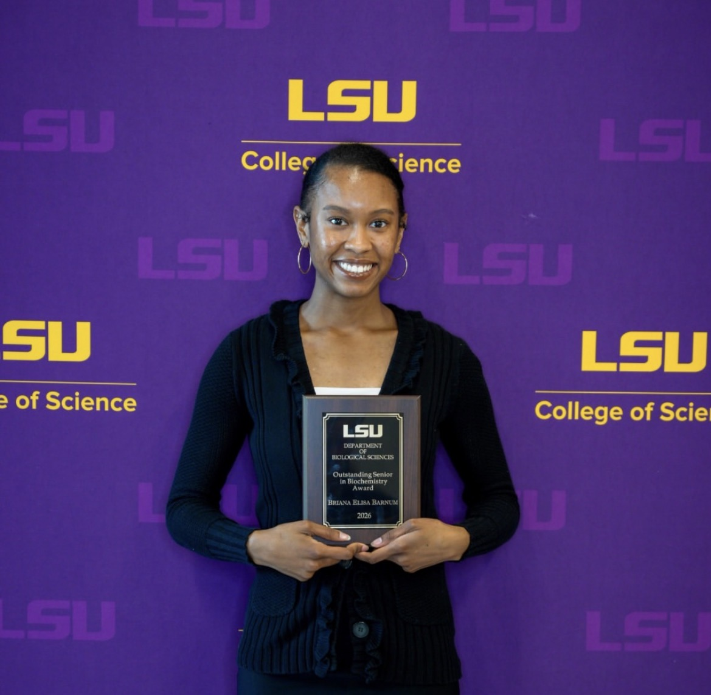
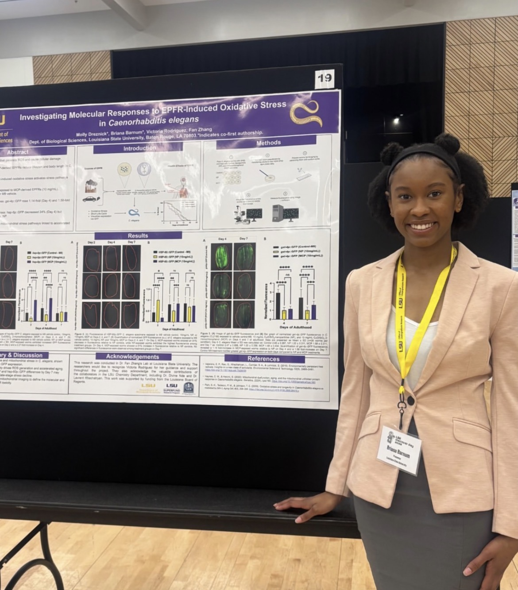
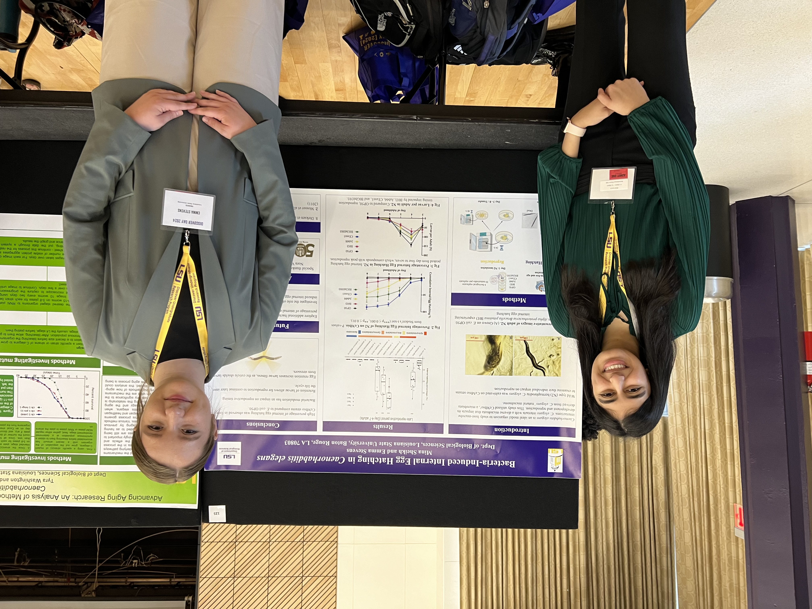

Maggie Cheng joined the lab as an Undergrauate Research Assistant. Welcome, Maggie!
Our paper, "Natural commensals induce internal egg hatching in C. elegans was accepted in Microbiology Spectrum. Congratulations to Nora, Mina, Victoria, and Jennifer. Many thanks for funding support from NIGMS!
Breanna Zhu from Baton Rouge Magnet High joined the lab as a high school student researcher. Welcome, Breanna!
April 2026
Molly received the Amborski Undergraduate Award, and Briana received the Outstanding Senior in Biochemistry Award. Congratulations to both on these outstanding achievements!


Molly and Briana presented their research at the LSU Discover Day Undergraduate Research and Creativity Conference.
Molly and Briana successfully defended their Honors Theses. Congratulations, Molly and Briana, on this important milestone!
March 2026
The Zhang Lab relocated to the new Our Lady of the Lake Health Interdisciplinary Science Building and is now located in the fourth-floor open laboratory space, Room 405.
Our Paper, "Shifts in soil microbiome surrounding a thermal treatment facility for hazardous waste: the hidden impact of environmentally persistent free radicals," was published in Environmental Science: Processes & Impacts. Congratulations to Nora and Aiyannah, and many thanks to our collaborators in the LSU Superfund Research Program!
2025
December 2025
Fan presented a seminar, "Endocrine regulation through host–microbe interactions: a C. elegans microbiome perspective," at the Institute of Marine and Environmental Technology, University of Maryland Center for Environmental Sciences. Many thanks to Dr. Russell Hill for hosting!
Fan presented a talk on bacteria-induced internal egg hatching, and Victoria presented "Investigating the Impact of EPRs on Stress Physiology and Lifespan in C. elegans" at the Monthly Bacterial Pathogenesis and Host Response Interest Group meeting.
November 2025
Nora successfully defended her Master's thesis. Congratulations, Nora, on this accomplishment!
Victoria Rodriguez presented her departmental entrance seminar, "Investigating the Impact of EPFRs on Stress Physiology and Lifespan in C. elegans," and successfully passed her qualifying exam. Congratulations, Victoria!
October 2025
Gabbie Dietel joined the lab as a Research Associate. Welcome, Gabbie!
September 2025
Briana Barnum joined the lab as an Undergraduate Research Assistant. Welcome, Briana!
Asalah Kasem joined the lab as an Undergraduate Research Assistant. Welcome, Asalah!
Davida Tsolenyanu joined the lab as an Undergraduate Research Assistant. Welcome, Davida!
August 2025
The Zhang Lab received an NIH NIGMS R35 award for the project "Microbial modulation of endocrine signaling in C. elegans."
July 2025
Nora and Victoria presented their research at the International Worm Meeting at the University of California, Davis.
Brandon Yan from St. Michael the Archangel High School joined the lab as a high school student researcher. Welcome, Brandon!
May 2025
David Dickerson from Episcopal Private School joined the lab as a high school student researcher. Welcome, David!
January 2025
Debi Ganguly joined the lab as an Undergraduate Research Assistant. Welcome, Debi!
2024
December 2024
Taylor successfully defended their Honors Thesis. Congratulations, Taylor, on this outstanding achievement!
Nora presented her departmental entrance seminar, "Bacteria-Induced Internal Egg Hatching in Caenorhabditis elegans," and successfully passed her qualifying exam. Congratulations, Nora!
November 2024
Fan presented a seminar, "Microbial Influences on Host Fitness: Insights from the Caenorhabditis elegans Microbiome," for the Comparative Biomedical Sciences program at the School of Veterinary Medicine. Many thanks to Dr. Alex Noel for hosting!
August 2024
Victoria Rodriguez joined the lab and began her Ph.D. program. Welcome, Victoria!
Fan received an SEC Faculty Travel Award to support collaborative research with Dr. Xin Wang's group at the University of Florida.
July 2024
Nora presented a poster on bacteria-induced internal egg hatching in C. elegans at the C. elegans Metabolism, Aging, Pathogenesis, Stress and Small RNAs meeting at the University of Wisconsin–Madison.
June 2024
Fan presented a talk, "High-throughput Analysis of Microbial Influence on the Soil Nematode C. elegans," at the Duckweeds, Microbes, and Symbiosis meeting in Vancouver, Canada. Many thanks to Dr. Megan Frederickson for the invitation!
Fan also presented a talk, "Natural Microbes Modulate the Reproduction and Lifespan Trade-off in C. elegans," at the Canadian Society for Ecology and Evolution (CSEE) meeting in Vancouver, Canada.
May 2024
The Zhang Lab received a Louisiana Board of Regents award for the project, "Unlocking the Remedial Potential of Soil Microbiomes Near a Hazardous Waste Thermal Treatment Site." Many thanks to the Louisiana Board of Regents and collaborators from the LSU Superfund Research Program.
Nora received the Dr. Richard Bruch Distinguished Graduate Student Scholarship from the department. Congratulations, Nora!
April 2024
Mina successfully defended her Honors Thesis. Congratulations, Mina, on this accomplishment!
Mina and Emma presented their research at the National Conference on Undergraduate Research in Long Beach, California.
Mina and Emma also presented at LSU Discover Day: Undergraduate Research and Creativity Conference.

Nora's presentation, "Bacteria-Induced Internal Egg Hatching in Caenorhabditis elegans," was selected for presentation at the Graduate Research Conference. Congratulations, Nora!
Blaire D'Aunoy joined the lab as an Undergraduate Research Assistant. Welcome, Blaire!
March 2024
Under Nora's mentorship, Britney Bellino from Kenilworth Science and Technology School earned 1st place at the Louisiana State Science Fair. Congratulations to Britney and Nora!
February 2024
Fan was selected as a Service-Learning Scholar by LSU-CCEL to develop service-learning modules for the undergraduate course Microbial Ecology.
January 2024
Taylor Rumney joined the lab as an Undergraduate Research Assistant. Welcome, Taylor!
2023
August 2023
Nora Villafuerte began her Ph.D. program. Welcome, Nora!
Jenny Tran joined the lab as an Undergraduate Research Assistant. Welcome, Jenny!
Molly Dreznick joined the lab as an Undergraduate Research Assistant. Welcome, Molly!
Emma Stevens joined the lab as an Undergraduate Research Assistant. Welcome, Emma!
Emily Clemens joined the lab as an Undergraduate Research Assistant. Welcome, Emily!
Will Foster joined the lab as an Undergraduate Research Assistant. Welcome, Will!
June 2023
Jennifer Lin from Baton Rouge High joined the lab as a high school student researcher. Welcome, Jennifer!
Paige Boudreaux joined the lab as an Undergraduate Research Assistant. Welcome, Paige!
May 2023
Nora Villafuerte joined the lab as a Research Associate. Welcome, Nora!
March 2023
Aiyanah Sandifer joined the lab as a Research Associate. Welcome, Aiyanah!
January 2023
Maha Rehman joined the lab as an Undergraduate Research Assistant. Welcome, Maha!
2022
October 2022
Mina Sheikh joined the lab as an Undergraduate Research Assistant. Welcome, Mina!
Fan presented a seminar, "Soil Nematode C. elegans as a Model for Microbiome Research", at the LSU School of Veterinary Medicine. Many thanks to Dr. Will Beaver for hosting!
September 2022
The Zhang Lab officially opened in the Department of Biological Sciences at Louisiana State University.